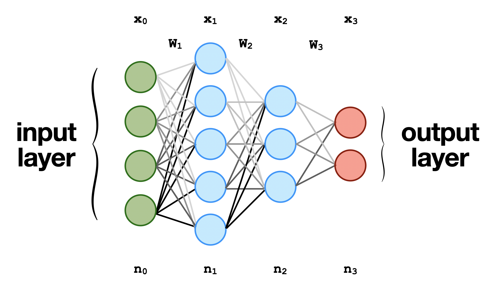

A typical visual representation of fully-connected 4-layer neural network or multi-layer perception (MLP) where \(\mathbf{x}_i\) is input vector to the next layer, \(\mathbf{W}_i\) are te matrix weights, and \(n_i\) are the number of neurons in a layer.
Neural networks are a subset of machine learning algorithms that are designed to model the behavior of the human brain. They are composed of interconnected nodes or neurons, which are organized into layers and process information in a parallel and distributed manner. Neural networks have gained significant attention in recent years due to their ability to solve complex problems in various domains, including image and speech recognition, natural language processing, and predictive analytics. One of the key strengths of neural networks is their ability to approximate any function to arbitrary accuracy, given a sufficiently large number of neurons in the hidden layers. This property, known as universal approximation, has made neural networks an essential tool for data scientists and researchers seeking to develop intelligent systems capable of learning and adapting to changing environments. In this background section, we will provide a comprehensive overview of the fundamentals of neural networks, including their architecture, training algorithms, and applications.
Multi-layer perceptions (MLPs) are a class of feed-forward neural networks that consist of one or more hidden layers of fully connected neurons (see \Cref{fig:mlp}). In an MLP, each neuron receives inputs from all the neurons in the previous layer and computes a weighted sum of these inputs with additional bias term $b$. The weighted sum is then passed through an activation function, which introduces non-linearity into the model. The most commonly used activation functions include \texttt{sigmoid}, \texttt{ReLU}, and \texttt{tanh}. The output of each neuron is then passed on to the neurons in the next layer until the output layer is reached, which produces the final output of the network. This sequence of operations is typically referred to as the \textit{forward pass}. The neural network \textit{learns} by iteratively updating itself using optimization methods that minimizes the error between output of the neural network and the output from the training data, also known as the \textit{backward pass} or \textit{backward propagation}. Neural networks are a subset of machine learning algorithms that are designed to model the behavior of the human brain. They are composed of interconnected nodes or neurons, which are organized into layers and process information in a parallel and distributed manner. Neural networks have gained significant attention in recent years due to their ability to solve complex problems in various domains, including image and speech recognition, natural language processing, and predictive analytics. One of the key strengths of neural networks is their ability to approximate any function to arbitrary accuracy, given a sufficiently large number of neurons in the hidden layers. This property, known as universal approximation, has made neural networks an essential tool for data scientists and researchers seeking to develop intelligent systems capable of learning and adapting to changing environments. In this background section, we will provide a comprehensive overview of the fundamentals of neural networks, including their architecture, training algorithms, and applications.
Multi-layer perceptions (MLPs) are a class of feed-forward neural networks that consist of one or more hidden layers of fully connected neurons (see \Cref{fig:mlp}). In an MLP, each neuron receives inputs from all the neurons in the previous layer and computes a weighted sum of these inputs with additional bias term $b$. The weighted sum is then passed through an activation function, which introduces non-linearity into the model. The most commonly used activation functions include \texttt{sigmoid}, \texttt{ReLU}, and \texttt{tanh}. The output of each neuron is then passed on to the neurons in the next layer until the output layer is reached, which produces the final output of the network. This sequence of operations is typically referred to as the \textit{forward pass}. The neural network \textit{learns} by iteratively updating itself using optimization methods that minimizes the error between output of the neural network and the output from the training data, also known as the \textit{backward pass} or \textit{backward propagation}.